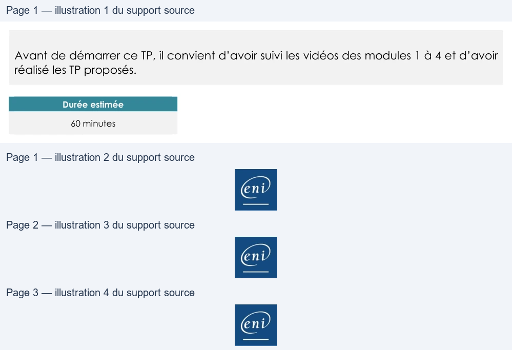

Transcription du document du Drive TSSR. La mise en forme est adaptée au Web ; les compléments IA du portail sont présentés séparément.
Microsoft 365 - Outils
TP du Module 04 – Exploiter Outlook et savoir le dépanner
Avant de démarrer ce TP, il convient d’avoir suivi les vidéos des modules 1 à 4 et d’avoir
réalisé les TP proposés.
Durée estimée
60 minutes
Objectifs
Connaître l’utilisation et le paramétrage d’Outlook.
Prérequis
Avoir installé Office
Principales tâches à réaliser
•
Ouvrez Outlook et connectez-vous avec votre adresse mail campus-eni.fr afin d’utiliser
l’autodiscover.
•
Connectez-vous à votre tenant puis notez le nom de l’appareil sur lequel est installé
votre office et comparer avec le nom de la machine ENI.
•
Relevez le lieu et l’adresse IP de votre dernière connexion.
Page 1/3
© ENI – Tous droits réservés
Microsoft 365 - Outils
•
Testez l’autodiscover par le menu de la zone de notification et notez les protocoles
utilisés et le code HTTP reçu.
•
Affichez votre « Outlook aujourd’hui ».
•
Ajoutez « Répondre à tous », « Transférer », « Eliminer les éléments supprimés » et «
Nouvelle tâche » à votre ruban.
•
Créez une règle de réponse automatique pour les messages en dehors de votre
organisation avec comme texte : « je suis actuellement en congés. Je serais de nouveau
disponible à partir du (2 jours plus tard) dès 8h00.
•
Tester en envoyant un mail depuis une autre adresse mail vers votre mail compus-eni.fr.
•
Créez une règle qui répond à ces critères :
o À partir du message de retour de la réponse automatique.
o Contenant des mots spécifiques dans le corps du message « réponse
automatique »
o Le déplacer dans le dossier « réponse congés »
o L’assigner à la catégorie verte nommée « réponse auto »
o Nommez votre règle « mon mail perso »
o Exécuter cette règle sur les messages déjà présents dans Boîte de réception
o Afin de tester votre règle, vérifiez que le mail reçu de réponse automatique a
bien vu cette règle s’appliquer et envoyez-vous un mail avec réponse
automatique dans le corps de votre message.
•
Ajoutez le complément web Emojis à votre Outlook.
•
Créez une signature pour vos mails (nouveaux messages et réponses) avec :
o Cordialement,
o Une ligne vide de séparation
o Votre nom et votre prénom
o Votre adresse
•
Faites de même dans Outlook sur le web.
•
Afficher les 3 volets Calendrier, Contacts et Tâches à droite de la page Outlook.
•
Afficher les messages en mode Conversation pour toute votre boîte aux lettres.
•
Créez une réunion Teams avec votre mail campus-eni.fr vers une autre adresse mail.
o Pouvez-vous y accéder avec votre autre adresse mail ?
•
Envoyez un courriel vers une autre adresse mail et rappelez-le.
•
Affichez le calendrier des jours fériés puis fusionnez-le avec votre calendrier.
Page 2/3
© ENI – Tous droits réservés
Microsoft 365 - Outils
•
Créez-vous une tâche qui a commencé lundi et qui finit vendredi, que vous appelez
“cours Office 365”.
o Priorité haute
o Statut “en cours de réalisation”
o 70% de pourcentage d’achèvement.
•
Envoyez un message de votre compte campus-eni.fr vers votre tenant et transformez-le
en rendez-vous.
Bonus
•
Envoyez-vous un sondage avec Forms :
o Question : le lever de soleil est-il ?
o Réponse 1 : beau ?
o Réponse 2 : magnifique ?
Page 3/3
© ENI – Tous droits réservés
